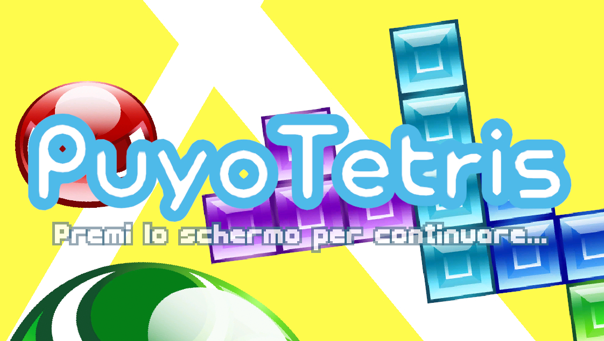

Sinossi
PuyoTetris è un clone di PuyoPuyoTetris semplificato, realizzato in Unity 6 che concentra la complessità dove serve. Il risultato è un progetto 2D pensato per l'uso mobile, senza rinunciare a una modalità di controllo da tastiera utile su PC durante test e spluppo. Questo progetto è stato sviluppato parallelamente a Rumble Smash per la Nautilus Academy.
Anno
2026
Engine
Unity
Durata
5 Giorni
Team
1 (Solo Dev)
Gli asset presenti nel gioco sono stati scaricati da spriters-resource.com.
Il codice è stato scritto da me, non è stata sfruttata programmazione agentica, anche se competente in quest'ambito. L'IA è stata utilizzata solo per ricerca didattica è come strumento alternativo al browser, il problema da risolvere non e stato buttato in una chat, compromettendo la mia capacità di ragionamento.
Convenzioni di lettura
Le convenzioni di cui parlo riguardano l'inserimento di sezioni utili a capire certe domande che ci si pone leggendo. Ecco quali sono:
-
Sezione "❓WHY?": utile per avere una chiara comprensione del motivo per cui ho formulato una soluzione, dunque, spiega il mio ragionamento e del mio approccio alla risoluzione dei problemi.
-
Sezione "🧭 CONTEXT!": utile per capire il contesto che contiene i problemi preesistenti che richiedevano una soluzione.
-
Sezione "🛠️ HOW?": dalla teoria alla pratica, spiego come ho effettivamente realizzato una soluzione, magari il codice scritto e le procedure seguite.
L'ordine dei paragrafi non segue il REALE workflow del progetto, non partirò parlando di project scope e planning, poiché metterò in cima le sezioni di programmazione e problem solving, le quali vengono spiegate in modo tale da poter essere lette senza dover aver letto necessariamente il contenuto dell'intera pagina. Se trovare molte ripetizioni, questo è il motivo.
Introduzione
PuyoTetris è un clone di PuyoPuyoTetris semplificato, realizzato in Unity 6 che concentra la complessità dove serve. Il risultato è un progetto 2D pensato per l'uso mobile, senza rinunciare a una modalità di controllo da tastiera utile su PC durante test e sviluppo. Questo progetto è stato sviluppato parallelamente a Rumble Smash per la Nautilus Academy.
🔧 La Griglia - Metodologia di pensiero e di risoluzione dei problemi
🧭 CONTEXT!
La creazione della griglia è stata sicuramente la parte più complicata, coordinate, conversioni di coordinate, conversioni in indice e così via, questa era la sfida più difficile, poiché un semplice errore significava un errore d'overflow oppure coordinate sballate dei pezzi e ricordiamoci che non esiste un debugger per dei calcoli matematici errati xD.
All'inizio il problema più delicato è stato far convivere il mondo di Unity con la scacchiera. In Tetris i pezzi cadono, più sei in basso, più il tuo indice aumenta, ad esempio, un pezzo appena spawnato avrà Y = 0 mentre un pezzo che ha raggiunto la fine della griglia sarà Y = (Altezza grliglia). In Unity, invece, funziona al contrario. Dovevo quindi evitare che una scelta di coordinate rendesse ambigui muri, fondo e blocchi già fissati.
Poi, un pezzo doveva essere spawnato tramite World Coordinates di unity, ma convertito in indici per verificarne la sua posizione all'interno della griglia, aspetta... adesso quel pezzo deve muoversi, allora dobbiamo aggiornare l'indice e spostarci all'interno della griglia, poi aggiornare le nostre World Coordinates sulla base della grandezza di ogni blocco della griglia. E se la griglia si fosse spostata all'interno della scena Unity? La trasformazione del tetramino doveva comprendere anche la posizione della griglia nel mondo.
La soluzione di questi problemi era relativamente semplice in realtà, richiedeva solo un buon uso degli operatori matematici fondamentali, la parte difficile è stata comprendere profondamente la sfida logica affrontata e le soluzioni, senza mai perdere il filo e non sbavare da nessuna parte, anche perché un più al posto di un meno avrebbe completamente sballato un calcolo, constringendomi a rivedere tutto.
Oltre che sulla parte logica, mi concentrerò sul metodo che ho utilizzato per risolvere questo problema.
Prima di tutto ho preso carta e penna ed ho realizzato un disegno che rappresentasse una situazione di gameplay reale, per comprendere quali sfide avrei dovuto affrontare prima ancora di dover toccare il codice.
❓ WHY?
Il disegno mi ha permesso di comprendere a fondo le sfide logiche legate alla realizzazione della griglia, qui non si parlava di problemi architetturali del software, ma di problemi di logica strettamente dipendenti dal contesto di cui facevano parte. In questo modo avevo una mappa che potesse rispondere costanemente alle mie domande e che fosse in grado di spiegare il problema persino ad uno sconosciuto, perderne traccia era impossibile ed era assicurato che io avessi completa visione e comprensione del problema in ogni sua forma.
(Idea del disegno che avevo fatto, AI GENERATED)

Una volta compreso il problema, i parametri necessari e le sfide logiche da affrontare, mi sono cimentato nella realizzazione, la quale comprendeva come primo passo, la realizzazione della griglia. Ovviamente, la logica di tetris ragiona in celle e griglie, non in pixel o fisica realistica, dunque, ho sfruttato la logica degli array ed una logica basata su celle e non su trasformazioni
🛠️ HOW?
TetrisLogic mantiene due array bidimensionali con indici [riga, colonna].
GridMapValues[,] conserva il tipo di un tile della griglia, la
tipologia è descritto dall'enumerazione GridMapValues, come
spiegato qui. Le
tipologie di tile possono variare tra i seguenti:
- Vuoto.
- Muro.
- Tetramino.
- Invalid. (Serve quando si prova a leggere un indice al di fuori della griglia, molto utile per la condizione di GameOver ed altri edge cases).
Parallelamente GameObject[,] conserva, invece, il riferimento
ai GameObject dei tetramino piazzati in mappa, facilitando il processo di
eliminazione e lettura dei blocchi. Questa doppia rappresentazione separa la
domanda: "Cosa occupa la cella?", dalla domanda: "Quale
oggetto devo animare, spostare o distruggere?".
GridSquareBottomLeftToWorldCoords e
GridSquareCenterToWorldCoords trasformano gli indici in
coordinate del mondo a partire da gridOrigin e dalla dimensione dei tile
della griglia, i quali vengono specificati tramite Inspector. Le funzioni
inverse, come intuibile, trasformano una qualunque coordinata in un indice
della griglia, tenendo conto del fatto che, nel modello scelto, la Y aumenta
verso il basso.
 Funzioni di conversione delle
coordinate
Funzioni inverse
Funzioni di conversione delle
coordinate
Funzioni inverse
❓ WHY?
Perché la griglia è sviluppata in questo modo?
Ho scelto una griglia logica perché un gioco a blocchi deve ragionare in celle, non in pixel. È il modo più affidabile per sapere se un tetramino può entrare in uno spazio, se ha toccato il fondo e se una riga è completa. Il transform da solo non è una base sicura per le regole: dipende da trasformazioni, pivot e arrotondamenti.
🎫 Event-driven design again...
Questo gioco è stato prodotto parallelamente a Rumble Smash, dunque, molti pattern/architetture usati in RS sono presenti anche qui, come proprio questo qui!. Vediamo il motivo per cui l'ho usato.
🧭 CONTEXT!
Come in qualunque gioco, una singola azione, ad esempio io che piazzo un pezzo, può generare una catena di eventi, audio, particelle, animazioni, aggiornamenti della ui o aggiornamenti della logica di gameplay. Ogni evento che richiede più servizi con responsabilità singole diventa uno UnityEvent.
❓ WHY?
Perché ho usato un'approccio event-driven? Quali sono i vantaggi?
Sfruttando l'event-driven design ottengo vantaggi come: ottimizzare l'utilizzo delle risorse al minimo indispensabile, evitando del tutto il pooling; evitare le dipendenze circolari tra script, riducendo la complessità; aumentare la testabilità, la manutenibilità, la riutizzabilità e la flessibilità del codice. In questo progetto è stato particolarmente utile per gestire le moltissime animazioni parametriche, dunque dipendenti da molte righe di codice, gestirle senza single-responsibility sarebbe stato doloroso.
🛠️ HOW?
TetrisLogic pubblica UnityEvent per movimento, rotazione, posa, cancellazione righe, creazione pezzo, inizio partita e game over. Gli ascoltatori sono collegati nella scena Tetris: FieldAudioManager riproduce le clip, FieldAnimationManager anima i blocchi, UIInGame aggiorna punteggio e anteprima, UIGameOver mostra o nasconde il pannello. L'evento onLineClear trasporta anche lista dei blocchi, durata e numero di linee, dati sufficienti perché i destinatari reagiscano senza interrogare direttamente la griglia.
In questo progetto, a causa della velocità di sviluppo, non sono ho eseguito degli approcci SOLID, ad esempio, si noti come "TetrisLogic" contiene logiche miste, sia dei singoli tetramini che dello stato del match, chiaramente questa è una lezione da imparare per il post-mortem, anche se ne ero perfettamente consapevole durante la creazione, ma per la fretta, ho scelto l'approccio più semplice. In ogni caso, la logica event-driven persiste e viene applicata con efficenza.

🤳 Controlli per mobile e desktop
🧭 CONTEXT!
Il primo scoglio è stata la necessità di aver più tipi diversi di controlli touch dovevo interpretare un movimento continuo del dito e trasformarlo in un azione in-game. Se reagisco a ogni variazione minima, il pezzo si muove per errore; se richiedo gesti troppo lunghi, il gioco sembra lento. Ho quindi cercato un confine chiaro tra gesto involontario, swipe direzionale e pressione prolungata, in questo modo il ritmo di gioco non si sarebbe potuto spezzare.
🛠️ HOW?
Ho creato una struttura definita "TouchManager", essa gestisce il riconoscimento dei vari tipi di tocchi effettuati dall'utente. Alla fine di un tocco la posizione iniziale e finale viene confrontata, se essa si trova sotto una soglia, non viene riconosciuto come uno swipe. Poi, confrontando il valore assoluto delle due componenti del delta decide se il gesto è orizzontale o verticale e ne ricava una delle quattro direzioni.
Frammenti di codice per il detect dello
swipe
In parallelo, vengono anche letti i comandi da tastiera, per poter permettere una facile debugging.
❓ WHY?
Come mai hai utilizzato questa struttura?
Sfruttando le enum ho potuto creare un set di movimenti noto e definito, non mutabile, leggendo da "thisFrameTouchInput" chiunque poteva consocere lo stato del gesto effettuato dall'utente. Il risultato è un livello di astrazione semplice: i gesti diventano un enum di comandi e la logica di movimento non deve conoscere il dispositivo che li ha prodotti.
🤠 Collisione predittiva e rotazione sicura
🧭 CONTEXT!
La difficoltà è che un tetramino non è un punto. Ogni pezzo è composto da quattro blocchi e tutti devono restare dentro il campo e fuori dalle celle occupate. Controllare soltanto il pivot, ovviamente, non bastava. Ho quindi ragionato sul futuro immediato del pezzo: prima immagino lo spostamento di ogni blocco, poi decido se applicarlo, una collisione predittiva che mi permette di risolvere il problema prima ancora che si crei, evitando a priori overlap e collisioni, ma comunicandole in modo efficiente ai sistemi che se ne occupano.
❓ WHY?
Volevo che un comando producesse sempre un risultato comprensibile: il pezzo si sposta o rimane dov'è. In particolare, una rotazione vicino a un muro o a blocchi già fissati non deve creare compenetrazioni, questo vale si per il movimento che per la rotazione. Per ottenere questa coerenza, la validazione deve avvenire prima di modificare lo stato definitivo.
🛠️ HOW?
CheckTetraminoCollisionOnGrid itera sui blocchi del tetramino,
calcola la cella prevista sommando la traslazione in input e verifica due
condizioni: uscita dai limiti orizzontali o inferiori e presenza di un valore
TETRAMINO nella griglia. Il costo è costante nella pratica, perché un pezzo
standard ha al massimo quattro blocchi.
MoveActivePiece controlla asse X e asse Y separatamente: se
una direzione è bloccata, l'altra non viene annullata per errore.
Per le rotazioni memorizzo il Quaternion del pivot del tetramino, sfruttando le funzioni di conversioni, poi, applico 90 gradi ed eseguono un controllo predittivo di collisione. Se si rileva una collisione, ripristino la rotazione precedente; altrimenti notifico l'evento di posizionamento del tetramino attivo, a cui sono iscritti servizi come "TetraminoAudioManager" o "TetraminoAnimationManager" per dirne due. Questo meccanismo risolve il problema delle rotazioni illegittime senza introdurre una tabella esterna di pose.
Algoritmo di rotazione
🤰 Generazione dei tetramini e continuità della partita
🧭 CONTEXT!
Adesso era il momento di creare la "pouch" di tetris, questo algoritmo è stato il precursore della randomicità controllata nel game design, comprenderne il funzionamento non era solo necessario per ottimizzare il gameplay di questo progetto, pure perché è uno stratagemma usatissimo nell'ambito del game design. Parallelamente, mi serviva conoscere il pezzo successivo per aggiornare l'icona di anteprima.
❓ WHY?
L'algoritmo definito "pouch algorithm" è utile per non affidare l'estrazione di ogni pezzo a un meccanismo non deterministico. Una casualità pura può ripetere a lungo lo stesso tipo e lasciare il giocatore senza una forma utile: è formalmente casuale ma percepita come ingiusta e a lungo andare frustrante. Ho preferito un ordine casuale che conservi una distribuzione controllata, motivo per cui è stato ideato questo algoritmo.
🛠️ HOW?
La funziona CreateNewPiece costruisce una lista mescolando i
sette prefab dei tetramini con OrderBy su un valore casuale.
Aggiunge un ottavo elemento casuale come ponte verso la pouch successiva,
generato separatamente dagli altri 7. Quando tutti i 7 pezzi vengono
utilizzato, l'8 pezzo viene utilizzato come riferimento per ricomporre gli
altri sei tetramini e prepara di nuovo l'elemento ponte. In questo modo
ciascun ciclo di sette pezzi mantiene la varietà completa, mentre la coda
resta pronta per l'anteprima in UI.
Aura guada gnata: 100 🔥.
CreateNewPiece istanzia il prefab previsto, lo mette sotto il
wrapper dei pezzi, verifica subito se lo spawn collide con un blocco già
fissato e, in quel caso, attiva il game over. Se lo spawn è valido, emette
l'evento che aggiorna la UI del prossimo tetramino. La generazione è quindi
collegata al ciclo partita ma non si mescola con l'interfaccia.
Algoritmo generazione pouch &
Pezzo
♟️ Pattern architetturali e strategie
Singleton leggero per servizi condivisi
🧭 CONTEXT!
Alcuni servizi devono essere disponibili da più punti del gioco senza passare manualmente ogni riferimento nella catena degli oggetti. Le coroutine di utilità, lo stato del touch e il caricamento di alcuni prefab sono esempi di risorse trasversali alla singola schermata o al singolo componente.
❓ WHY?
Per questi casi ho scelto una versione essenziale del Singleton, rapido e semplice da realizzare, sufficiente a evitare ricerche ripetute nella gerarchia e a rendere immediato l'accesso a un servizio già presente nella scena. È una scelta circoscritta: il cuore della partita continua a ricevere molte dipendenze dall'Inspector, invece di trasformare tutto in stato globale.
🛠️ HOW?
TouchManager e PowUtilityU, ad esempio conservano una variabile statica inst. Awake verifica se esiste già un'istanza e, in caso contrario, memorizza quella corrente; il metodo statico Get restituisce il servizio o evoca un errore se non è disponibile.
🐛 Incapsulamento e configurazione serializzata
🧭 CONTEXT!
Molte variabili del gioco devono essere regolabili durante il bilanciamento: velocità di caduta, soglia degli swipe, dimensioni della griglia, punteggi, clip e riferimenti agli oggetti. Lasciarle tutte pubbliche renderebbe questi parametri error-prone in un contesto azienda o di collaborazione.
❓ WHY?
Volevo mantenere l'accessibilità dell'Inspector senza rinunciare alla protezione dello stato. Questa è la ragione per cui i dati sono spesso serializzati ma esposti al resto del codice con proprietà a scrittura privata.
🛠️ HOW?
Il codice usa sia campi privati annotati con SerializeField sia auto property con field SerializeField e private set. Per esempio, i parametri della griglia e gli AudioSource possono essere impostati dalla scena, mentre gli altri componenti possono leggerli ma non assegnarli liberamente. È un uso dell'incapsulamento contestualizzato agli attributi unici di Unity.
🪵 Modello dati tipizzato della partita
🧭 CONTEXT!
La logica della griglia ha bisogno di rappresentare: tipi diversi di tile, in modo da poter descrivere behaviour diversi; pezzi disponibili; righe candidate e riferimenti agli oggetti da modificare. Oltre la griglia, volevo fosse possibile conoscere il tipo di pezzo disponibile, senza dover creare classi a sé stanti, visto che avrei solo overcomplicato.
In sostanza, dovevo immagazzinare informazioni diverse fra loro ed era necessario che ognuna di esse rappresentassse lo stato corretto, oppure nel caso dei tile, la loro tipologia.
❓ WHY?
Ho scelto strutture fortemente tipizzate perché il dominio di Tetris è naturalmente discreto. Un tile può assumere poche tipologie note a priori e un pezzo appartiene a un insieme chiuso di forme che può assumere. Questo rende le condizioni più leggibili e permette al compilatore di evidenziare gli usi non validi, riducendo la possibilità di errori da parte di chi legge e scrive, come nel caso in cui avessi usato delle stringhe per ottenere la forma del pezzo.
🛠️ HOW?
Ho semplicemente sfruttato la struttura delle "enum", ad esempio,
GridMapValues e TetraminoTypes sono enum che
rappresentano rispettivamente lo stato di un tile e la forma del pezzo. Poi,
muovendi nel contesto degli input, DetectedTouchInput svolge lo
stesso ruolo per i comandi touch. Gli array bidimensionali si basano su enum
e memorizzano la griglia e le referenze visive.
⌛ Gestione del tempo e di azioni ritardate
🧭 CONTEXT
Per gestire flussi d'azione non temporalmente ordinate ho realizzato una libreria che sfrutta il sistema di coroutine di Unity. Dunque, se ad esempio, dopo la cancellazione di una riga dovevo aspettare 0.5 secondi prima di generare un nuovo pezzo, piuttosto che saturare il codice di coroutines, ho sfruttato delle funzioni anonime costruibili sul momento.
🛠️ HOW?
PowUtilityU espone delle funzioni che permettono di ritardare l'esecuzione
di una funzione, come DelayAction, DoActionUntil e
RepeatActionForFrame. Ricevono Action o Func e avviano
IEnumerator che restituiscono WaitForSeconds oppure null al motore Unity.
Inoltre, l'ID unico della coroutine viene immagazzinato per poter manipolarlo
successivamente al suo utilizzo. Grazie al sistema di coroutine di Unity se
io chiamo una stessa funzione come coroutine, gli ID saranno sempre diversi,
in questo modo non si possono creare conflitti tra coroutine con lo stesso
behaviour.
❓ WHY?
La necessità di dover ritardare delle azioni in conseguenza di altre è onnipresente nel GameDev, soprattutto in architetture event-driven. Delegati e coroutine permettono di passare il comportamento da eseguire e di distribuirlo nel tempo senza creare thread aggiuntivi né interrompere il frame corrente o senza overhead aggiuntivo. Unite all'archietettura di PowUtilityU sviluppata da me, posso sfruttarne le potenzialità senza la necessità di creare codice boilerplate.
💀 Post mortem
👥 TetrisLogic non rispetta la Single-Responsibility
Context
TetrisLogic gestisce troppe logiche differenti tra loro, ognuna delle quali può essere disaccoppiata con relativa facilità. Per motivi legati al tempo, come deadline da rispettare, ho dovuto snellire il periodo dedicato al design architetturale.
Errore
Ho trasformato TetrisLogic in una classe centrale con troppe
responsabilità. Questo tipo di classe è comoda nelle prime fasi, perché basta
aprire un file per trovare quasi ogni regola; modificare certe parti di
codice, però, diventa molto più tedioso poiché una miriade di regole sono
strettamente legate fra di loro. Una correzione alla velocità di caduta, per
esempio, ed eccomi a navigare tra righe dedicate all'input, alla collisione e
alla gestione delle righe della griglia, in pratica il debug diventa
un'inferno.
Come lo migliorerei
Separerei il sistema in oggetti con compiti chiari:
Board: stato della griglia, verifica delle celle e cancellazione delle righe;PieceGenerator: bag da sette pezzi e anteprima;GameSession: stato della partita e transizioni fra spawn, caduta, clearing, pausa e game over;
La classe Unity che oggi è TetrisLogic avrebbe il ruolo
d'orchestratore, fornirebbe degli eventi a cui iscriversi e li invocherebbe
quando utile notificando ogni sistema iscritto, non di contenere ogni
dettaglio dell'implementazione. Seguendo proprio il principio dell'Event
driven design.
🤔 Gli stati della partita non sono esaustivi e non sono epliciti
Context
La cancellazione di una riga richiede una sequenza: rilevare le righe piene, animare i blocchi, eliminarli, far scendere il resto e generare un nuovo pezzo, tutto è rilegato a routine seguite da funzioni, non chiare se non leggendo riga per riga il codice. In sostanza le routine di una partita sono gestite da funzioni specifiche, annidate e nascoste tra righe di codice, piuttosto che da classi e strutture solide in grado di descriverne in modo esplicito il comportamento, anche per questo non è possibile risalire allo stato della partita in real-time, ci si può solo iscrivere all'evento corrispondente che rappresenta uno "pseudo-stato" della partita. Questo non è necessariamente un problema, visto che i limiti del gioco erano ben definiti prima della realizzazione del codice, questo sistema non rappresenta un limite se rapportato alla grandezza raggiungibile del progetto, ma visto che il post-mortem esiste per identificare i punti da migliorare per prepararmi ad un contesto aziendale, allora sì che rappresenta un problema.
Errore
Il meccanismo funziona, ma il limite è che lo stato della partita viene
dedotto da variabili indirette come activePiece == null,
hasGameOver e Time.timeScale. Questo rende
difficile sapere in quale fase si trova realmente il gioco e aumenta il
rischio di transizioni non previste, soprattutto con retry, pausa o modifiche
future alle animazioni.
Come lo migliorerei
Introdurrei una macchina a stati esplicita:
Spawning -> Falling -> Locking -> Clearing -> Spawning
| |
v v
GameOver PausedOgni stato sarebbe deducibile in real-time e dividerei la logica, evitando la possibilità di eseguire comandi incoerenti al contesto dello stato di cui fanno parte. Risalire ad un errore in un certo stato della partita sarebbe molto più semplice grazia alla struttura esplicita e anche all'accoppiamento ridotto fra gli stati.
🤔 Ho usato UnityEvent e Singleton come scorciatoie senza fissare confini più chiari
Context
Ho usato UnityEvent per collegare gameplay, UI, audio e
animazioni direttamente nell'Inspector. Ho inoltre introdotto Singleton
leggeri per TouchManager, PowUtilityU, così da
recuperare servizi condivisi con un metodo statico Get().
Errore
Queste scelte mi hanno permesso di lavorare rapidamente nella scena, ma alcune dipendenze sono diventate meno visibili nel codice. Con gli eventi configurati nell'Inspector posso dimenticare un listener o collegare un metodo con parametri non più coerenti senza accorgermene durante una revisione del solo codice. Con i Singleton, invece, rendo disponibili servizi globali e devo gestire attentamente ciclo di vita, ordine di inizializzazione e duplicati. Non considero questi strumenti sbagliati: l'errore è non aver deciso in modo coerente quando usarli e quando preferire una dipendenza esplicita.
Come lo migliorerei
Conserverei UnityEvent per il collegamento di feedback
audiovisivi, ma farei passare gli eventi fondamentali del dominio attraverso
interfacce o eventi C# espliciti. Per esempio, GameSession
potrebbe esporre LineCleared e GameOver, mentre un
presenter Unity li sottoscrive e li trasforma in UI e animazioni. L'obiettivo
è di ridurre il numero di Singleton, poi creerei un single-entry-point per
gestire le dipendenze durante l'inizializzazione di una scena di una partita,
mentre gli strumenti generici diventerebbero servizi piccoli e testabili.
💠 Ho lasciato alcune configurazioni distribuite e fragili
Context
Punteggi, velocità, prefab, sprite delle icone, clip audio e riferimenti di scena sono impostati in componenti diversi. Alcune operazioni caricano risorse con stringhe, mentre il passaggio tra scene usa nomi scritti direttamente nel codice.
Errore
La configurazione nell'Inspector è utile, ma ho lasciato dati collegati fra loro in punti diversi. Aggiungere un nuovo tetramino o cambiare nome a una scena richiede ricordarsi tutti i punti da aggiornare: generatori, icone, colori, prefab e caricamenti. Questo aumenta il rischio di un progetto che funziona in editor ma fallisce dopo una riorganizzazione degli asset.
Come lo migliorerei
Creerei uno o più ScriptableObject di configurazione. Ogni
tetramino avrebbe tipo, prefab, icona, eventuale colore e dati di rotazione;
una configurazione di partita conterrebbe punteggi e velocità. Per le scene
userei riferimenti o un catalogo centralizzato, evitando stringhe sparse. In
questo modo l'aggiunta di contenuto diventerebbe una modifica dati, non una
caccia a switch e riferimenti serializzati.
🧪 Ho trascurato test e ho utilizzato uno strumento di logging fragile
Context
Le conseguenze a cascata degli errori precedenti si cristallizzano in
difficoltà nel testare il codice. Non solo, ma la maggior parte del controllo
è stata fatta provando la scena e stampando molti Debug.Log. Per
un prototipo visivo è un modo naturale per procedere, ma la griglia contiene
regole discrete che si prestano molto bene a test automatici. Inoltre, un
Debug.Log funziona solo nel breve termine, in sistemi complessi
è necessario dover immagazzinare molte informazioni di stato e poterle
filtrare in base al contesto del problema che si sta cercando di risolvere.
In pratica, serve un sistema di logging molto più robusto di un semplice
Debug.Log.
Errore
- Non ho isolato abbastanza i moduli da Unity per poterli testare in modo veloce. Questo rende più difficile dimostrare che collisione, rotazione, cancellazione multipla e generazione rispettino sempre le stesse invarianti, ad esempio.
- Ho sfruttato strumenti di logging non esaustivi. Ad esempio, avrei potuto sfruttare il logging package.
Come lo migliorerei
Scriverei test edit mode sul dominio puro, prima ancora dei play mode test:
- un pezzo non può uscire da sinistra, destra o fondo;
- una rotazione non può sovrapporsi a celle occupate;
- una riga piena viene rimossa e le righe superiori scendono correttamente;
- due o più righe cancellate nello stesso turno vengono compattate nell'ordine giusto;
- ogni bag contiene una volta ciascuno dei sette tipi;
- la preview coincide con il prossimo pezzo estratto.
Aggiungerei poi controlli di sviluppo espliciti nel modello, come dimensioni coerenti delle matrici e celle sempre valide. Parallelamente, avrei sfruttato il logging package.
Questa pagina dev'essere ancora riempita